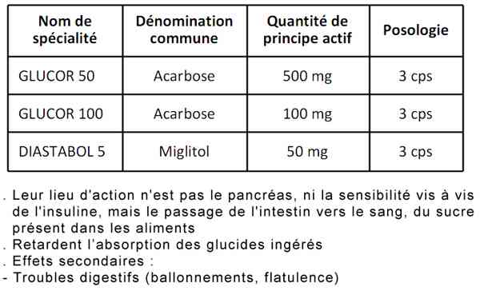
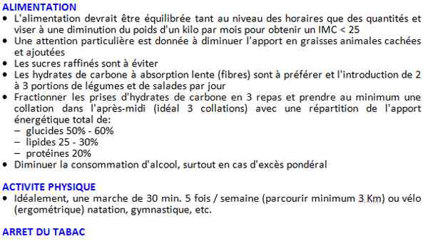

Bienvenue Sur Medical Education
Hyperglycémie simple
Spécialité : endocrinologie / métabolisme /
Points importants
L'hyperglycémie aiguë, survient quand le niveau de glycémie est élevé, > 3 g/L (16,6mmol/L)
On distingue :
- L'hyperglycémie simple
- L'hyperglycémie en situation de stress
- L'hyperglycémie chronique définissant le diabète
- La décompensation cétosique
- L'acidocétose pour le diabète de type 1
- Le syndrome hyperglycémique hyperosmolaire pour le diabète de type 2
-
La proportion de consultants hyperglycémiques augmente avec l'âge quel que soit le sexe
Présentation clinique / CIMU
SIGNES FONCTIONNELS
Les symptômes sont rares et apparaissent de façon lente même quand la glycémie est élevée
- Asthénie
- Sensation de soif, polydipsie
- Envie fréquente d'uriner surtout la nuit, polyurie
- Asthénie, amaigrissement (carence insulinique)
Signes spécifiques
- Troubles de la vision
- Peau sèche avec démangeaisons
- Infections fréquentes (infections urinaires, panaris, mycoses entre les orteils, abcès)
- Nausées, vomissements (cétose)
- Douleurs abdominales
CONTEXTE
Terrain
- Patients diabétiques de type 1 ou 2
- Patient en surpoids
-
Patient non diabétique : essayer de typer cliniquement le diabète :
- type 1 : plutôt avant 30 ans avec présence d'un syndrome cardinal
- après 40 ans avec une surcharge pondérale et des antécédents familiaux pour le diabète de type 2
Traitement usuel
- Antidiabétique oral (metformine, sulfamide hypoglycémiant et glinide, glitazone, inhibiteur de l'alpha glucosidase)
- Insuline
Facteurs de risque
- Cardio-vasculaire en particulier HTA (dont le contrôle permet de stabiliser la micro et la macro angiopathie)
Circonstances de survenue
Recherche
- d'une situation de stress (sepsis, IDM, AVC, grossesse, hyperthyroïdie, hépatite, prise d'un traitement concomitant, ...)
- d'une acidocétose
- d'une décompensation hyperosmolaire
- d'une rupture de traitement
EXAMEN CLINIQUE
- Le plus souvent normal
- Recherche d'une infection
- Douleur abdominale (en faveur d'une cétose)
- Odeur cétonique de l'haleine (pomme verte)
- Polypnée (mesurer FR sur 1 min) en faveur d une acidose
- Recherche des signes de déshydratation globale en faveur d'une hyperosmolarité
EXAMENS PARACLINIQUES SIMPLES
- Glycémie capillaire > 3g/L (16,6mmol/L)
- BU : glycosurie mais absence de cétonurie
- Cétonémie = 0
- ECG : recherche de signes en faveur d'une ischémie myocardique (cause de décompensation)
CIMU
-
Tri 3
Signes paracliniques
BIOLOGIQUE
-
Ionogramme sanguin : normal, en particulier la réserve alcaline et l'osmolalité sanguine, urée, créatinémie
-
Bêta HCG si suspicion de grossesse
-
± NFS et CRP à la recherche d'une infection pouvant décompenser le diabète
-
Pas d'autres examens nécessaires en l'absence de signes en faveur d'une acidocétose, d'une hyperosmolarité
IMAGERIE
-
Pas d'examens d'imagerie nécessaire en cas d'hyperglycémie simple
-
Si suspicion d'AVC, scanner cérébral
Diagnostic étiologique
-
Découverte de diabète
-
Décompensation hyperglycémique d'un diabète insulino ou non insulinodépendant
-
Hyperglycémie en situation de stress :
-
infection
-
IDM
-
AVC
-
grossesse
-
chirurgie
-
réanimation
-
accouchement (chez un patient diabétique connu ou non)
Diagnostic différentiel
-
Hyperglycémie secondaire à une pathologie intercurrente ou d'origine iatrogène
-
Autres causes de diabète, notamment diabète "MODY" : DNID de caractère familial, monogénique, autosomique dominant, survenant chez des sujets jeunes
-
Décompensation transitoire d'un diabète de type 2, qui peut parfois s'accompagner d'une cétonurie
Traitement
TRAITEMENT EXTRAHOSPITALIER / INTRA HOSPITALIER
-
Hyperglycémie simple sur un diabète non connu : essayer de « typer » cliniquement le diabète
Diagnostic étiologique
- Découverte de diabète
- Décompensation hyperglycémique d'un diabète insulino ou non insulinodépendant
-
Hyperglycémie en situation de stress :
- infection
- IDM
- AVC
- grossesse
- chirurgie
- réanimation
-
accouchement (chez un patient diabétique connu ou non)
Diagnostic différentiel
-
Hyperglycémie secondaire à une pathologie intercurrente ou d'origine iatrogène
-
Autres causes de diabète, notamment diabète "MODY" : DNID de caractère familial, monogénique, autosomique dominant, survenant chez des sujets jeunes
-
Décompensation transitoire d'un diabète de type 2, qui peut parfois s'accompagner d'une cétonurie
Traitement
TRAITEMENT EXTRAHOSPITALIER / INTRA HOSPITALIER
-
Hyperglycémie simple sur un diabète non connu : essayer de « typer » cliniquement le diabète
Traitement
TRAITEMENT EXTRAHOSPITALIER / INTRA HOSPITALIER
- Hyperglycémie simple sur un diabète non connu : essayer de « typer » cliniquement le diabète
Sont en faveur d'un diabète de type 1
- Absence d'hyperglycémie préalable (normo glycémie stricte sur bilans antérieurs)
- Syndrome cardinal franc, en particulier amaigrissement conséquent et rapide
- ± cétonurie initiale
- Sujet jeune < 30 ans
- Sans surpoids
- Survenue brutale (acidocétose)
- Sans ATCD familiaux de diabète
-
=> Traitement :
- boisson abondante
-
si glycémie > 11 mmol/L, cétonémie = 0 :
- 2 injections d'insuline intermédiaire (NPH) ou une injection d'un analogue lent (LANTUS, LEVEMIR) 0,3 à 0,4 UI /kg/j
- bolus d'insuline rapide (Actrapid®) ou analogue rapide (Novorapid®) en SC en fonction du protocole (voir Diabétique aux urgences)
- bégime pauvre en sucre et graisse
Sont en faveur d'un diabète de type 2
- Age > 40 ans
- Notion d'hyperglycémie modérée antérieure
- ATCD familiaux de diabète de type 2
- Surpoids androïde (IMC > ou = 25 kg/m2)
- Facteurs de risque cardiovasculaires (HTA, dyslipidémie) associés dans le cadre d'un syndrome métabolique
- Absence d'amaigrissement, symptomatologie absente ou peu " bruyante "
- Présence de complications micro, macroangiopathiques ou neurologiques
- Absence de cétonurie
-
=> Traitement :
-
boisson abondante
-
la metformine sera utilisée en première intention (vérifier l’absence de contre-indication : insuffisance rénale, hépatique, cardiaque, respiratoire)
-
si IMC < 27 on pourra opter en première intention pour un sulfamide
-
-
Traitements associés :
- les statines sont indiquées si le taux du LDL-cholestérol est > 1 g /L, en cas d'atteinte rénale et /ou en présence de facteurs de risque vasculaire
- les inhibiteurs de l'enzyme de conversion et les antagonistes de récepteurs de l'angiotensine II sont indiqués chez les diabétiques microabuminuriques ou macro albuminuriques, même en dehors d'une HTA
- les antiagrégants plaquettaires sont justifiés chez les diabétiques à haut risque vasculaire et en cas de néphropathie diabétique
-
objectif avoir :
- PA < 130/80 mmHg
- LDL-CHOL<1g/L
- HbA1c < 6,5% (à adapter selon le terrain et l'âge)
Hyperglycémie simple chez un diabétique connu sans cétose (voir Diabétique aux urgences)
Hyperglycémie simple chez un diabétique connu avec cétose : (voir Diabétique aux urgences)
Hyperglycémie en situation de stress
- Insulinothérapie en IVSE
- Arrêt des traitements antidiabétiques antérieurs
- Régime diabétique. Collations
- Pas de protocole Actrapid®
-
Objectifs :
- glycémie à jeun : 0,8 à 1,2 g/L selon le terrain
- glycémie post-prandiale < 1,4 g/L
MEDICAMENTS
Insulines rapides
- Umuline rapide® ou Insuman rapide®, ou Actrapid ®
- Les analogues rapides : Apidra®, et NovoRapid®, Humalog®
Insulines retard
- Les insulines à durée intermédiaire : NPH ®
- Les analogues lents : Lantus®, et Levemir®
-
Antidiabétiques oraux :
-
sulfamides hypoglycémiants :
- Daonil® cp 5mg
- Hémi-Daonil® cp 2,5 mg
- Daonil faible® cp 1,5 mg
- Amarel® cp 1, 2, 3, 4 mg
-
Diamicron® Cp LP 30 mg
-
 _26
Tableau
Sulfamides hypoglycémiants
_26
Tableau
Sulfamides hypoglycémiants
-
-
biguanides : Stagid® 700 mg, Glucophage® (metformine) 500 ou 850 mg ou 1000 mg
-
 _49
Tableau
Biguanides
_49
Tableau
Biguanides
-
-
inhibiteurs des alpha-glucosidases : Glucor® 50mg ou 100mg, Diastabol® 50 mg ou 100 mg
-  _780 Tableau Inhibiteurs des alpha-glucosidases
- glytazones (Actos®, Vandia®)
- inhibiteurs de la DPP4 (Januvia®)
-
analogues du GLP1 (Byetta®)
-
sulfamides hypoglycémiants :
Surveillance
CLINIQUE
-
Aucun
PARACLINIQUE
-
Glycémie capillaire :
-
toutes les 4h si Actrapid®
-
toutes les 2h si analogues rapides
-
jusqu'à normalisation de la glycémie
-
Cétonurie/cétonémie si = 0 1 fois /j
Devenir / orientation
CRITERES D'ADMISSION
-
Hospitalisation en diabétologie lors de la découverte d'un diabète de type 1 ou de type 2 présentant des comorbidités
-
Hospitalisation en diabétologie chez le diabétique de type 2 connu présentant des comorbidités ou le diabétique de type 1 en rupture de suivi ou mauvaise éducation
CRITERES DE SORTIE
- toutes les 4h si Actrapid®
- toutes les 2h si analogues rapides
- jusqu'à normalisation de la glycémie
Devenir / orientation
CRITERES D'ADMISSION
- Hospitalisation en diabétologie lors de la découverte d'un diabète de type 1 ou de type 2 présentant des comorbidités
- Hospitalisation en diabétologie chez le diabétique de type 2 connu présentant des comorbidités ou le diabétique de type 1 en rupture de suivi ou mauvaise éducation
CRITERES DE SORTIE
Diabétique type 1
- Si la glycémie s'est normalisée au bout de 2h. Consultation en diabétologie ou médecin généraliste dans les 24 h - 48 h et vérifier la bonne éducation
Diabétique type 2
- Non connu sans signe de gravité : consultation en diabétologie rapide 24 - 48 h
- Chroniquement déséquilibré : consultation en diabétologie 24 - 48 h
ORDONNANCE DE SORTIE
Diabétique type 2 non connu, sans signe de gravité
-
Glucophage 850 : augmenter de 1cp / par paliers de 3 jours (maximum 3 cp/j)
- J1 :1 cp /j
- J3 :1-1-0
- J6 :1-1-1
- QSP 1 mois
- Surveiller la glycémie capillaire 1 fois /j
Diabétique type 2 chroniquement déséquilibré
- Majoration des ADO si possible (ex : si Biguanide type metformine 1 cp /j, augmenter à 2 ou 3 cps /j)
- Si la dose est déjà maximale, ajouter un sulfamide ou augmenter la dose de celui-ci
RECOMMANDATIONS DE SORTIE

_77
Tableau
Recommandations de sortie
Mécanisme / description
Diabète de type 1
- Déficit complet de l'insulino-sécrétion
- Lié à la destruction des cellules ß des îlots de Langherans du pancréas par un processus auto-immun
- Sur un terrain génétiquement prédisposé : haplotypes de susceptibilité HLA DR 3 et DR4
Diabète de type 2
- Déficit de l'insulino-sécrétion secondaire à une dysfonction insulaire
- Anomalies fonctionnelles de la cellule ß pancréatique. Perte de la masse fonctionnelle ß
- Insulino-résistance hépatique, musculaire et adipocytaire
-
Incapacité de la cellule ß à répondre à l'augmentation des besoins en insuline qui résulte de l'insulinorésistance
Bibliographie
-
Traitement médicamenteux du diabète de type 2 : recommandations ; HAS et AFSSAPS. Novembre 2006
-
Diabète de type 1 de l'adulte : HAS. Juillet 2007
-
Diabètes care.2004. 27(2): 553-591. NEJM.2006. 355(18): 1903-11
Auteur(s) : Johana MALKA, Fabrice LOUVET